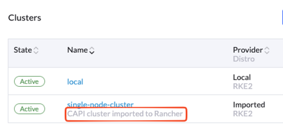
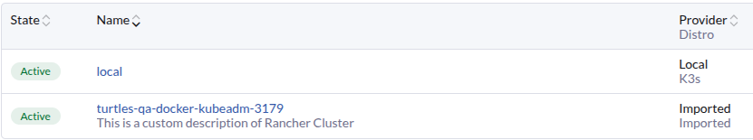

|
Ce document a été traduit à l'aide d'une technologie de traduction automatique. Bien que nous nous efforcions de fournir des traductions exactes, nous ne fournissons aucune garantie quant à l'exhaustivité, l'exactitude ou la fiabilité du contenu traduit. En cas de divergence, la version originale anglaise prévaut et fait foi. |
Enregistrement du cluster Rancher
Comment enregistrer un cluster CAPI dans Rancher en utilisant l’importation automatique de Turtles
Le seul flux de travail pris en charge pour enregistrer des clusters CAPI dans Rancher en utilisant Turtles, est d’utiliser l’étiquette cluster-api.cattle.io/rancher-auto-import :
-
Étiquetez un espace de noms afin que tous les clusters qui y sont contenus soient importés.
kubectl label namespace capi-clusters cluster-api.cattle.io/rancher-auto-import=true -
Étiquetez une définition de cluster individuelle afin qu’elle soit importée.
kubectl label clusters.cluster.x-k8s.io cluster1 cluster-api.cattle.io/rancher-auto-import=true
Lorsque l’étiquette d’importation automatique est utilisée, Turtles attendra que le cluster CAPI ait la condition ControlPlaneAvailable définie sur True.
Cette condition souligne que le cluster est entièrement initialisé et disponible pour traiter les demandes.
Turtles créera alors automatiquement la ressource Rancher clusters.management.cattle.io sur le cluster de gestion, ce qui entraînera l’installation de cattle-cluster-agent sur le cluster CAPI en aval.
Si le déploiement de l’agent est réussi, le cluster importé devrait apparaître sur le tableau de bord Rancher.
|
Un espace de noms (ou cluster) peut être marqué pour l’importation automatique à tout moment : avant ou après la création du cluster. |
|
Marquer un cluster pour l’importation automatique déclenche l’enregistrement automatique par le contrôleur Turtles, l’exécution manuelle des commandes d’enregistrement n’est pas prise en charge. |
Ajoutez une description personnalisée au cluster Rancher
La description par défaut attribuée à un cluster Rancher importé est "Cluster CAPI importé dans Rancher".

Pour ajouter une description personnalisée au cluster Rancher importé, vous pouvez ajouter l’annotation cluster-api.cattle.io/cluster-description à votre cluster CAPI.
apiVersion: cluster.x-k8s.io/v1beta1
kind: Cluster
metadata:
name: docker-kubeadm-quickstart
labels:
cni: calico
annotations:
cluster-api.cattle.io/cluster-description: "This is a custom description of Rancher Cluster"
Si un cluster CAPI est déjà importé, l’ajout de l’annotation ne fera rien. Vous devrez peut-être supprimer votre cluster Rancher importé et le réimporter.
Supprimez le cluster importé de Rancher
Les étiquettes cluster-api.cattle.io/capi-cluster-owner et cluster-api.cattle.io/capi-cluster-owner-ns peuvent être utilisées pour supprimer le cluster Rancher :
kubectl delete clusters.management.cattle.io -l cluster-api.cattle.io/capi-cluster-owner=cluster1 -l cluster-api.cattle.io/capi-cluster-owner-ns=capi-clustersUne fois que le cluster importé est marqué pour suppression :
-
Le contrôleur Turtles annotera le cluster CAPI avec
imported: true. -
Cette annotation empêche le cluster d’être réimporté automatiquement par Rancher.
-
Vérifiez l’annotation en utilisant la commande suivante :
kubectl -n capi-clusters get clusters.cluster.x-k8s.io cluster1 -o json | jq .metadata.annotations { "imported": "true" ... }
|
La suppression du cluster Rancher ne supprime que la ressource |
Réimporter le cluster
Si vous devez réimporter le même cluster CAPI dans Rancher, supprimez l’annotation imported: true via la commande ci-dessous :
kubectl -n capi-clusters patch clusters.cluster.x-k8s.io <cluster-name> --type='json' -p='[{"op": "remove", "path": "/metadata/annotations/imported"}]'